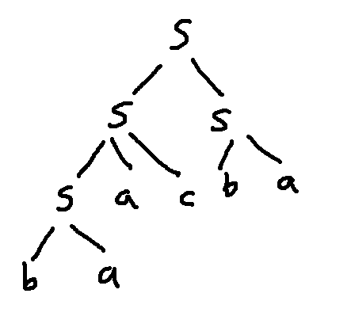
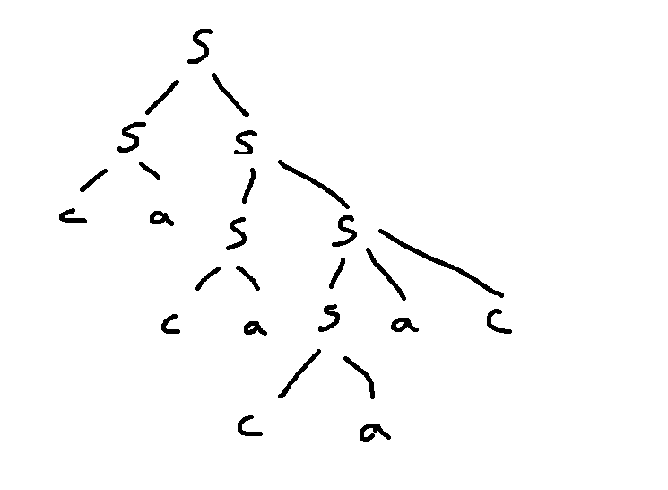
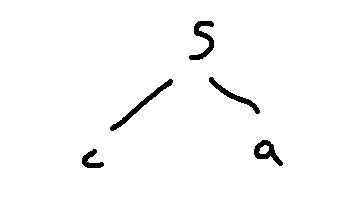
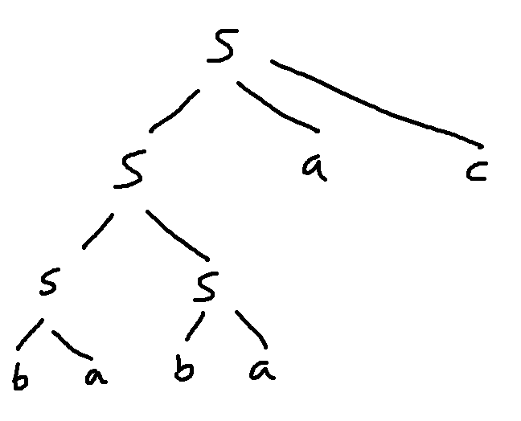
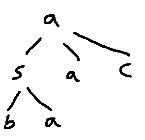
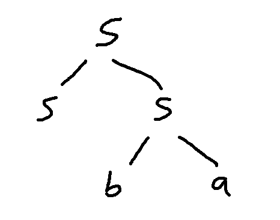
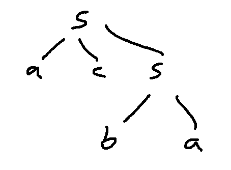
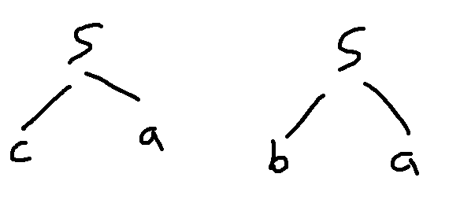
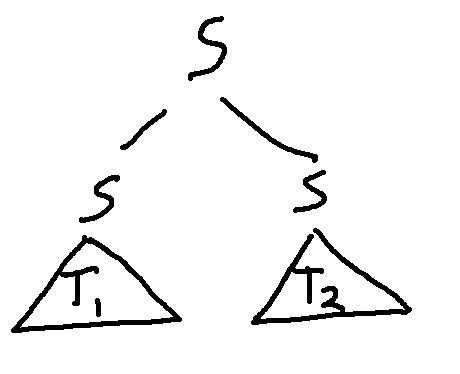
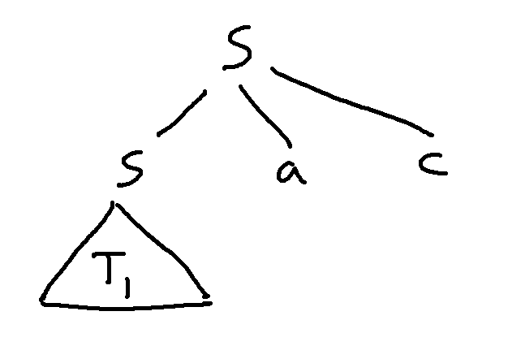

Here's a sample context-free grammar:
Grammar Gstart symbols: S
terminals: a, b, c
\(S \rightarrow S S \mid S a c\)
\(S \rightarrow c a \mid b a\)
The two lines of rules are shorthand for four rules:
\(S \rightarrow S S\)
\(S \rightarrow S a c\)
\(S \rightarrow c a \)
\(S \rightarrow b a\)
Here are some trees from this grammar. Notice that each one has S as its root label and the leaves have labels a, b, or c. And the children of each node match the local pattern of one of the grammar rules.
   
The strings corresponding to these trees are "baacba", "cacacaac", "ca", and "babaac". (I.e. read off the leaves from left to right.)
The trees below don't match this grammar. The root label on the lefthand one isn't a start symbol. One of the leaf labels in the middle one isn't a terminal symbol. And the righthand one has a node whose children don't match any of the rule patterns. The left-to-right order matters. So children labelled a,c,S doesn't match a rule pattern S,a,c.
  
As with the llama trees in the previous video, the local constraints from grammar rules can impose global constraints on the tree shape.
Let's define the notation b(T) = number of b's in tree T, and similarly for a and c. I claim that:
Claim: \(a(T) = b(T) + c(T)\) for any tree matching grammar G
Informally, this is true because terminals are always introduced in an ac or ab pair. Let's prove this formally using induction.
Because the root symbol isn't a terminal, the shortest trees matching grammar G have height 1. And the only possibilities are these two trees:

So the start of our proof looks like this:
Proof: by induction on h, which is the height of the tree.Base case: h=1. There are two trees of height 1. One has a root S with children labelled c and a. The other has a root S with children labelled b and a. For both of these trees, the number of a's is equal to the number of b's plus the number of c's.
Inductive hypothesis: \(a(T) = b(T) + c(T)\) for any tree T matching grammar G that has height h=1,...,k-1.
To start our inductive step, we introduce a tree T of height k. Our goal is to show that the equation holds for T.
Rest of inductive step: Let T be a tree of height k matching grammar G.....
So \(a(T) = b(T) + c(T)\), which is what we needed to prove.
When we are using the inductive step, we know that k must be at least 2. We've already handled the case where h=1, because that was the base case. Let's make that explicit:
Rest of inductive step: Let T be a tree of height k matching grammar G, where \(k \ge 2\).....
So \(a(T) = b(T) + c(T)\), which is what we needed to prove.
Now, let's divide up our tree T at the root. There's two possibilities for what the top of T looks like. We'll need to use a proof by cases.
 
Rest of inductive step: Let T be a tree of height k matching grammar G, where \(k \ge 2\).There are two cases:
Case 1: T consists of a root labelled S and two subtrees (\(T_1\) and \(T_2\)) with roots labelled S.
....
Case 2: T consists of a root labelled S. It has a child subtree (\(T_1\)) with root label S, plus two children that are terminals a and c.
....
In both cases, \(a(T) = b(T) + c(T)\), which is what we needed to prove.
Pictures can often make it easier to describe the two cases. My draft proof hasn't been very precise about the left-to-right order of the root's children because it turns out that this doesn't matter for this claim.
For the first case, we need to use the inductive hypothesis on \(T_1\) and \(T_2\) and then use the result to derive an equation for T. We'll need to use the fact that the nodes in T are just the nodes in its subtrees plus any extra nodes at the top (e.g. the root node and the two terminals in case 2).
Case 1: T consists of a root labelled S and two subtrees (\(T_1\) and \(T_2\)) with roots labelled S.
By the inductive hypothesis, \(a(T_1) = b(T_1) + c(T_1)\) and \(a(T_2) = b(T_2) + c(T_2)\). We also know that \(a(T) = a(T_1) + a(T_2)\), \(b(T) = b(T_1) + b(T_2)\), \(c(T) = c(T_1) + c(T_2)\). Combining these equations, we get:
\( \begin{eqnarray} a(T) = a(T_1) + a(T_2) &=& (b(T_1) + c(T_1))\ +\ (b(T_2) + c(T_2)) \\ &=& (b(T_1) + b(T_2)) \ + \ (c(T_1) + c(T_2)) \\ &=& b(T) + c(T) \end{eqnarray} \).
Now, let's build something similar for Case 2. This time, we have only one subtree but two extra terminals.
Case 2: T consists of a root labelled S. It has a child subtree (\(T_1\)) with root label S, plus two children that are terminals a and c.
By the inductive hypothesis, \(a(T_1) = b(T_1) + c(T_1)\). We also know that \(a(T) = a(T_1) + 1\), \(b(T) = b(T_1)\), \(c(T) = c(T_1) + 1\). Combining these equations, we get:
\( \begin{eqnarray} a(T) = a(T_1) + 1 &=& (b(T_1) + c(T_1))\ +\ 1 \\ &=& b(T_1) \ + \ (c(T_1) + 1) \\ &=& b(T) + c(T) \end{eqnarray} \).